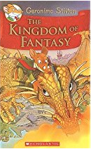

Back
Buyit
Contact Us
Back
Buyit
Contact Us
Books
Geronimo Stilton - The Kingdom of Fantasy Hardcover -1 Dec 2009
by Geronimo Stilton

PRODUCT DESCRIPTION
Geronimo Stilton arrives at work one fine morning to find the office in a complete uproar. The minute Geronimo sets his paw in the office, he realises this is not going to be a good day. His staff is complaining about things and everything is in disorder. Worst of all, he has a pimple on his snout. When he heads home after work, he is struck by a lightening and the electricity goes off. He has to find his way to his attic in pitch dark. After several mishaps like stepping on a roller skate and stepping onto a rake, he discovers a magical golden staircase there. He steps into the Kingdom of Fantasy. He is helped by Scribblehopper, a frog, who acts as his guide. His mission is to save the Queen of Fairies.
ABOUT THE AUTHOR
The actual mind behind The Thea Stilton series is Elisabetta Dami, though it bears the names Thea Stilton and Geronimo Stilton as the authors. Elizabetta is an Italian author, who is a great lover of travelling and adventure. With the quest for adventure, she has explored the toughest destinations of the world, including the high mountain ranges of Nepal and the cold Alaska. She possesses a world citizenship. She has participated in marathons and parachute jumps. Her wild nature is also reflected in her imagination, which is the basic key of her works.
PRODUCT DETAILS
Reading level: 7 - 12 years
Hardcover: 288 pages
Publisher: Scholastic Incorporated (1 December 2009)
Language: English
ISBN-10: 0545980259
ISBN-13: 978-0545980258
Product Dimensions: 2.5 x 13.3 x 19.7 cm